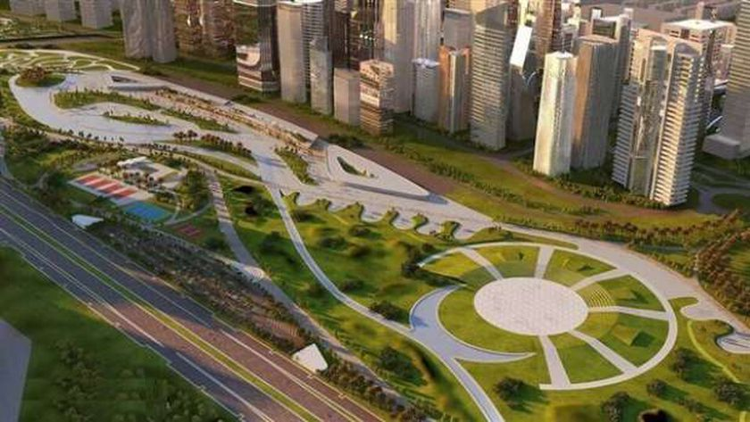

اهم معلومات عن الاتوبيس
ويهدف المشروع إلى توفير بديل عملي وحضاري مناسب للمصريين ليمثل خياراً مغرياً لقائدي المركبات الخاصة قالت شركة مواصلات مصر، اليوم الأربعاء، إنها بدأت التشغيل التجريبي للمرحلة الأولى من مشروع النقل
الجماعي الذكي، التي تستهدف تشغيل 180 أتوبيس، في القاهرة الكبرى، تستخدم أحدث الوسائل التكنولوجية
وأضافت الشركة في بيان، حصل عليه مصراوي، أن المرحلة الأولى، التي بدأت أول الشهر وتنتهي في 30 يونيو
2018، تتضمن 100 ميني باص، و80 أتوبيس ذكي مكيف، تعمل على 18 خطا على مستوى القاهرة الكبرى
وتمتلك مجموعة الإمارات الوطنية، 70% من شركة مواصلات مصر، وتنفذ المشروع بالتعاون مع محافظة القاهرة وهيئة النقل العام